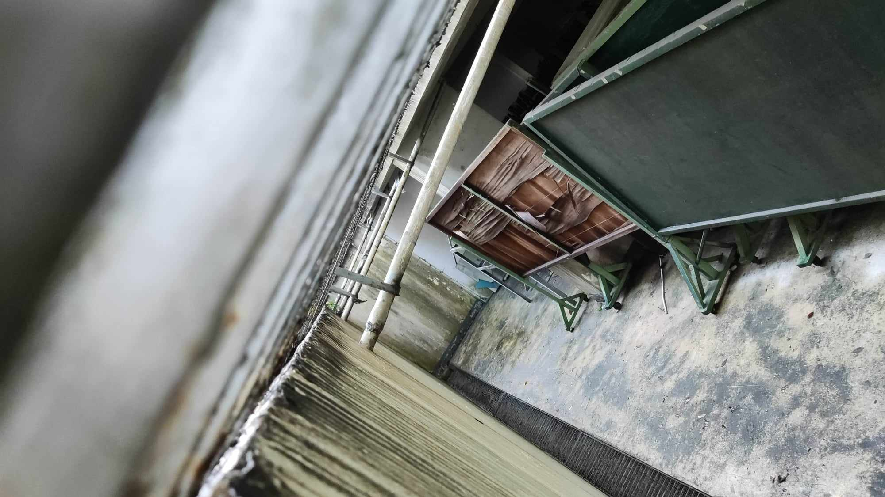
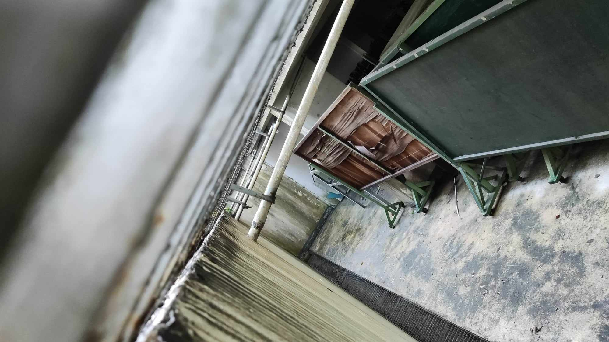

The following false document contains the raw, unmodified notes I took on our walk. After this contains a "short" writeup about my thoughts on the readings.
ARTS observation - theres moss everywhere
its such a naturey and urbanized place at the same time
a leadblower going at it while birds chirp above
the trees are old. mossed, stable (well, there was a fallen tree or two around but theyre old too)
the grass is so uniform, clearly human intervention
its beautiful here!
i almost dont even notice the cars, though once you do theyre so lou
cat pissing
a piece of the grand past
had to walk faster bcuz of leaf blower
the stench of sewage
cracked, slippery, mossy sidewalks
old stone hidden beneath grass
i hear the clicking of some animal in the grass
i got a notif when i approached the CAL bldg lol cuz i had dilnet
how many leaf types are on this tree
the ground is so cold
it smells fruity
fruits! what kind? they smell sweet
nomm basil (it isnt but i want pesto now)
so much city life. shocking
ahh the smell of exhaust. gotta love human development
what were you?
running water! the sound is soo relaxing
this tree be reachin out. guess he wanna see the museum
so much plant life but no bug life? its a little worrying
all the plants r reaching out :)
the fallen twigs made a cool pattern but in photo it doesnt really look like it
 did someone drink here or was it a project
hehe old stuff under the museum

theres always this vine blanket everywhere
first flowers id seen
framed so well :) i wonder how old the trees are
i was expecting to see a lot more bugs
enjoyable! if i was on my own i wouldve really noticed the time and wouldve stopped to start writing or drawing (nature is inspiring) but having a fixed go-back time stopped all those thoughts and let me focus on the task at hand
did someone drink here or was it a project
hehe old stuff under the museum

theres always this vine blanket everywhere
first flowers id seen
framed so well :) i wonder how old the trees are
i was expecting to see a lot more bugs
enjoyable! if i was on my own i wouldve really noticed the time and wouldve stopped to start writing or drawing (nature is inspiring) but having a fixed go-back time stopped all those thoughts and let me focus on the task at hand
Unrelated to Detail of Michelangelo Rondanani Pieta, c. 1555-64 (plate 3), as referenced in Jas Elsner's Art History as Ekphrasis, its my art notes from our nature walk day.
© defghijklmnop
Ekphrasis on Art History
Lance Libatique
August 29
11
There is a freedom to the art historian's prose that is both admirable and, to avoid more vulgar language, unique. It is reminiscent of the freedom one gives themselves when in that unbounded mode of thinking, where one has no responsibilities to the world and is free to draw connection from the apple to the pie to baking to chemistry; it is that winding path one takes to reach a destination where, upon observation, a companion would be inclined to ask: 'where the fuck are we going' or perhaps 'do you actually know how to get there?' It is liberated, it is impossible to understand on the first read, it is the crisp boundary between reaching the word limit and actually saying conveying thoughts with value. Inexplicably, after being exposed to this boundary, I heed the siren's call, as perhaps all art historians have heeded, to jump into that sea of liberated, chaotic thought. But I hope not to disappoint, and so must declare my intentions---I do not have so bold a goal as to describe the nature of describing art, as my inspirations may have had. Instead, I am simply letting go to the whims of this heart, this heart that had suffered for an hour or two decoding that intense verbosity that plagues our readings and blesses the authors. I let go, too, to the primate within me that once needed to hunt for fruit and spot predators in the night, the primate that functioned on the dogma of "monkey see, monkey do." And this monkey sees a mode of writing where one need not have the filter, need not take the highway to the destination of one's ideas. This monkey shall do with the escanitas and dirt roads of the mind, entertaining the flowers and the rats, for the simple goal of elaborating how much I had enjoyed the nature walk we took this day.
© defghijklmnop
12
I must say, however, that I write this not simply to take the piss on our beloved historians. There is beauty in the art of their art-historical prose that I wish to deconstruct and reassemble in this writing. If you, dear reader, do not wish to experience this performance, then you may read the raw train of thought I had taken on that walk (as was labeled at the top of this page.) However, it is the very nature of that thought, those vague ideas barely connected by once-treaded paths, that I believe makes this style of prose a fine fit.
© defghijklmnop
13
And on the topic of taking the piss on art historians, inspired by the great segways of old, I remember the sight of a cat urinating on a mossy rock as one of the first sights of my walk. A picture was not taken so as to preserve the privacy of the artist and my decency as an appreciator of art (as no comedic bit would justify me taking a picture of such a pebble.) My eyes had been led to that glistening rock, whose denizens had been defiled by the act. That near-microscopic life whose form was so fine so as to be like a solid blanket of verdant green, covering not just that one rock, but the stones around it, climbing up tree and bark and reaching the canopy. It had told me that this place was old and undisturbed. Where the grass and moss could drink of the sun and rain and piss and expect to see the moon later ten thousand times over. But this place was undisturbed only here and select places, in small snapshots of the world. Upon turning one's senses beyond the perhaps-unintentful artwork of that blonde-white cat, one hears first the roar of a car, then of a leafblower, and only past that noise does one hear the leaves and the wind. This, more than anywhere else I had called a school, was where untouched nature collided with humanity, the dissonance of concrete and leaf in center stage.
© defghijklmnop
14
There was a part of me surprised to have noticed this so late. I had been here for the past 3 weeks, and yet never really thought to drink of the green that surrounded me. Perhaps this was in part due to my imprisonment in the more urban areas of the school, and indeed, the CAL building is blessed in its adjacency to nature relative to the AECH building within which the matters of computer science ruled supreme. Here, I was closer to the matters of my own heart, of the living love I had for the moss and the arts. But that surprise was also of my own fault---I had never decided to look so closely at my every sense. Stuck in that sense of walking to the next class, never noticing the freshly cut grass. Enjoying time with friends, ignorant of the birdsong hidden under the exhaust. Pondering the next assignment, focused only on the who's and the what's, not the where. I had forsaken the liberated choice one always has, to look around and smell the flowers.
© defghijklmnop
15
Perhaps this is part of the beauty of the art historian's verbosity that allures me. I had not done this writing for grades (though I would appreciate being scored for this) nor for the convenience of a reader. I had written this simply because I wanted to do so, to scratch an itch, to entertain whimsy, to vent off spite. Selfish desires, selfish ponderings. One might say I could have said this all in a paragraph or two. However, now that we are here, pushing the 900 word count, could you really say there was naught gained in this path? The art historian speaks so for their mind overflows with connections, and they must trek enough of those lest they do injustice to the true, platonic form of their idea. Diminishing returns need not apply here, in the author's domain where their word is sacred. And for gods who see no value in anything, no amount of sacrifice is too great. No amount of reader-hours will satiate. So too like a god are the words of the art historian enduring and sacrosanct: I may spite their verbosity all they want, but the mossy rock will not reply, only stand there, an art piece in glorious immutability. But after that mess of untranslateable words I must say: do not fret, future journal entries will not take this same winding path. Perhaps they will be more concise, more artistic, more graphical. Only here, for this one moment, do I choose to be the ekphrastic historian, the monkey, the cat, the mossy rock. I have taken the winding road, done what I had seen, pissed where I have seen fit. And at the end, I am but a dissonant note in a world of moss and plant.